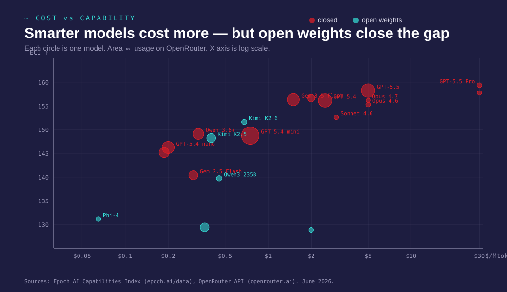
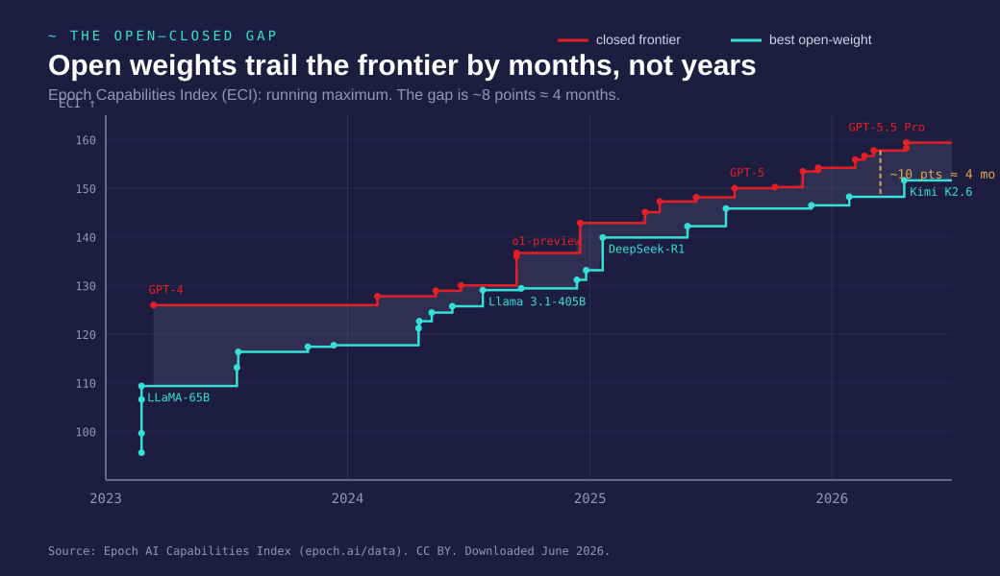
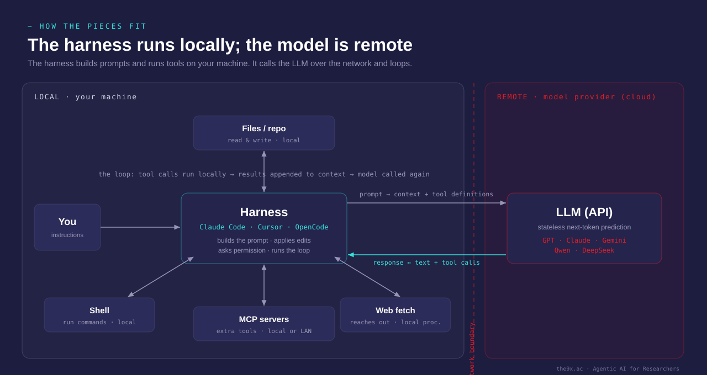

The arc of the day
three claims
Three claims
- Intelligence is a commodity — understand the stack, unbundle it, pick your tools.
- Agents work only when structure underneath them is good — your Day-1 practices are the prerequisite.
- Agents introduce new reproducibility risks — pinned models, saved prompts, structured IRs, and assertions are the cure.
Act 1
01 · How LLMs actually work
Everything is a chat completion
01a · The technical core without the hype
A model is a next-token predictor

Tokenization: how text becomes numbers
- The model never sees raw text — it sees tokens
- A token ≈ ¾ of a word: "economics" →
["econ", "omics"] - A fixed vocabulary of ~100K tokens, learned from data
- Each token is an integer:
"econ" → 42317,"omics" → 7891
Everything you send — code, math, prose — is first chopped into these pieces.
Embeddings: tokens as vectors
- Each token is mapped to a vector in $\mathbb{R}^d$ (typically $d = 4096$)
- Similar meanings → nearby vectors (cosine similarity)
- "king" − "man" + "woman" ≈ "queen" — linear algebra on meaning
- The model's "knowledge" lives in these vectors and the matrices that transform them
A 70 billion parameter model = 70 billion numbers defining these transformations.
From weights to answers: the LLM lifecycle
| Stage | What happens | Cost structure |
|---|---|---|
| Training | Learn language from trillions of tokens | Fixed cost: $10M–$1B+, paid once |
| Fine-tuning | Adapt to a domain or task with curated data | Fixed cost: $100–$100K, paid per adaptation |
| Quantization | Round the vectors to use less memory | Fixed cost: minutes of compute, trades precision for size |
| Inference | Generate tokens from a prompt | Variable cost: pay per token, every call |
Training: the sunk cost
- Pre-training on internet-scale text: books, code, papers, web
- Produces general-purpose "foundation" weights
- GPT-4 class: estimated $100M+; Llama 3: ~$30M in compute
- You never pay this — it's amortized across all users
Think of it as R&D capex — you consume the output, not the process.
Fine-tuning: domain adaptation
- Supervised fine-tuning (SFT): train on (prompt, ideal response) pairs
- RLHF / DPO: align with human preferences — "be helpful, don't be harmful"
- LoRA: update only a small adapter (~1–5% of parameters), keep base frozen
Quantization: rounding the vectors
- Each of those 70 billion numbers is stored as a decimal (32 bits → 8 significant digits)
- Quantization rounds them to fewer digits (4 bits → ~1 significant digit)
- Memory drops 8×: a 70B model goes from ~280 GB to ~35 GB
- Quality loss is surprisingly small — like rounding coefficients to 2 decimal places
This is what makes it possible to run serious models on a laptop.
Inference: the variable cost
- Every API call = forward pass through the network = tokens in, tokens out
- Priced per million tokens: $0.10 (cheap) to $15 (frontier)
- Cost is falling ~10× per year at the same quality level
- Local inference: variable cost → zero after hardware purchase
Context is everything that fits in the window
- The model sees only what is inside the context window
- Everything outside it is gone — no persistent memory
- The full transcript is re-sent on every API call
- Context filling causes failure — the fix is a fresh session, not more prompting
System, user, assistant

Attention: how the model decides what matters
- Each token attends to all previous tokens
- $d_k$ scales the dot product so softmax doesn't saturate
- Multi-head: multiple attention patterns in parallel
Tool calling is structured output with a feedback loop
Without tools
{
"role": "assistant",
"content": "The answer is 42."
}
With tools
{
"role": "assistant",
"tool_calls": [{
"name": "read_file",
"arguments": {"path": "data.csv"}
}]
}
The harness runs the tool, appends the result, and calls the model again.
The ecosystem — and the unbundling argument
01b · Four separable layers
Five layers of the stack
| Layer | What it is | Examples |
|---|---|---|
| Model | The neural network | GPT, Claude, Gemma, Qwen, DeepSeek |
| Harness | The program that runs the loop | Claude.ai, Cursor, Claude Code, Zed |
| Tool | Built-in actions the harness provides | Read, Write, Bash, WebFetch |
| MCP | External tools plugged in at runtime | Filesystem, web search, database |
| Skill | Plain-text instructions in your repo | CLAUDE.md, AGENTS.md, domain skills |
Choosing a model: cost vs capability

Match the model to the task
| Task | Needs | Model tier |
|---|---|---|
| Reformat a table | Speed, low cost | Small (Haiku, Flash, local 14B) |
| Write a Stata .do file | Domain knowledge, accuracy | Mid (Sonnet, GPT-4o) |
| Design a research pipeline | Reasoning, large context | Frontier (Opus, o3) |
| Review a 50-page paper | Long context window | Frontier with 128K+ context |
Using Opus to reformat a CSV is like hiring a professor to do data entry.
Intelligence is commoditizing fast

The open–closed gap stays small

What runs locally on consumer hardware
| Hardware | VRAM / RAM | What fits | Approximate cost |
|---|---|---|---|
| MacBook Air M3 | 24 GB unified | 14B models (Qwen 2.5, Llama 3) | ~$1,800 |
| Mac Studio M4 Ultra | 192 GB unified | 70B+ models at full quality | ~$6,000 |
| Gaming PC + RTX 4090 | 24 GB VRAM | 14B models, 70B quantized (slow) | ~$2,500 |
Tools: Ollama (one-click install), llama.cpp, LM Studio — all free.
Cloud vs local: a make-or-buy decision
Cloud API
- Low fixed cost (subscription or free tier)
- Positive marginal cost per token
- Always frontier quality
- Data leaves your machine
Local inference
- High fixed cost (hardware)
- Zero marginal cost
- Slightly lower quality (quantized)
- Data never leaves your machine
For restricted data (DUA, IRB), local may be the only compliant option.
The prescription
- Pick one harness you are comfortable in
- Swap models freely for each task
- Write skills as readable markdown
- Keep very good structure in your work
Lock-in is the risk; model loyalty is a mistake.
Harness, tools, and the model

Act 2
02 · Working with agents
The escape–enter loop in practice
02a · Live demo
The two-layer model
Natural language in
You describe what you want in plain English. The agent interprets, plans, and acts.
Structured output out
Diffs, file edits, shell commands — all reviewable. You review diffs, not code.
When to hit Escape
- The agent is going in the wrong direction
- It's making changes you didn't ask for
- Context is getting polluted with errors
- "Toxic context" — when a mistake poisons all subsequent reasoning
The fix: start a fresh session, not more prompting.
The independence principle
Never let the same session verify its own work.
- Agent writes code → you review the diff
- Agent runs tests → a different session or you verify the output
- Same context = same blind spots
Permission boundaries
The agent can never delete or overwrite your data if permissions are set correctly.
CLAUDE.md vs AGENTS.md
| File | Purpose | What goes in |
|---|---|---|
CLAUDE.md | Project conventions | Data assumptions, naming rules, niche tools |
AGENTS.md | Agent-specific config | Permissions, model preferences, workflow |
What does NOT belong: everything else. Irrelevant instructions actively hurt.
Skills and project configuration
02b · Two kinds of plain text that make agents smarter
Project config: CLAUDE.md
- Your conventions, data assumptions, preferred tools
- Start with 3–5 rules
- Add one each time you correct the agent twice
- This is the minimum viable project config
Skills: reusable task templates
- A skill = a markdown file with a fixed output location, commit convention, and stopping rules
- Domain-specific, not generic
- The agent reads the skill and follows it like a recipe
Worked example: paper-writing skill set
| Skill | Task queue |
|---|---|
WRITING | Draft sections, revise, format |
MODEL | Specify econometric model, robustness checks |
LITERATURE | Find papers, summarize, cite |
EMPIRICS | Run regressions, create tables, validate |
EDITING | Proofread, consistency check, style |
Each skill has its own queue. Separation of concerns.
Why not dump everything in one file?
❌ One giant file
- Context window fills up
- Conflicting instructions
- Agent ignores most of it
- Actively degrades performance
✅ Separated skills
- Each skill is focused
- Agent loads only what's needed
- Easy to test and iterate
- Reusable across projects
Exercise
02c · Write a project config and a skill
Your turn (20 min)
- 10 min: Draft a CLAUDE.md for your project
- Tools the agent does not know
- Naming conventions, data paths
- Verification rules
- 5 min: Draft a minimal skill for one recurring task
- 5 min: Share one thing that was hard to write down
The act of writing conventions in plain text for a model forces a precision that is valuable even if you never use the skill.
Act 3
03 · Structure, reproducibility, and the agentic risk
Reproducibility from Day 1
03a · The prerequisite
Day-1 practices are agent-compatible practices
- No hard-coded paths
- No overwriting raw data
main.dowith step flags- README from day 1
- Secrets in environment variables
- Checksum-guarded downloads
These are not just journal requirements — they are what makes your project legible to an agent.
The old risk vs the new risk
Old reproducibility risk
Someone else can't re-run your code. Fixed by Day-1 practices.
New agentic risk
You can't re-run your code. The same prompt does not produce the same code twice.
Models are non-deterministic
- Temperature, sampling, and system state mean the same prompt → different code
- The model you used is deprecated within a year
- Without pinning, your paper is not reproducible — even by you
The cure: treat the interaction as data
The prompt is part of your methods section.
dodo: structured IR for .do pipelines
03b · Live demo
What is dodo?
- A DuckDB extension that runs your
.dofiles unchanged show sql— see what the agent actually produced, not what you asked forassert— catch silent failuresdodoc— compile the pipeline to SQL for CI
The .do syntax is a structured intermediate representation — the agent generates it, you audit the SQL it produces, the Makefile runs it.
Silent failures to watch for
"It ran without errors" is not a test.
Exercise
03c · Find the silent failure in your own pipeline
Your turn (75 min)
Bring a .do file or use the provided Hungarian company registry dataset.
- Run it through dodo
- Use
show sqlto find one thing the agent generated that you would not have caught by reading the.dofile - Write two
assertstatements that would catch it next time - Add those asserts to a
make testtarget
Closing
04 · What comes next
What do you actually do on Monday?
- Which harness to start with?
- Which model for which task?
- What goes in your CLAUDE.md — the minimum viable project config?
- What structural change does your project need before an agent can work in it?
- Which failure modes to watch for?
Failure modes to watch for
- Hallucination — agent invents facts, citations, APIs
- Silent data decisions — drops rows, changes types, rounds values
- Scope creep — agent rewrites code you didn't ask to change
- Context degradation — quality drops as conversation grows
- Confident domain errors — plausible-sounding but wrong economics
- Restricted data leaving your machine — DUA / IRB violations
The durable investment
Day-1 structure was already right. Skills make it agent-legible. Assertions make it auditable. The models will keep getting cheaper; the structure is the durable investment.